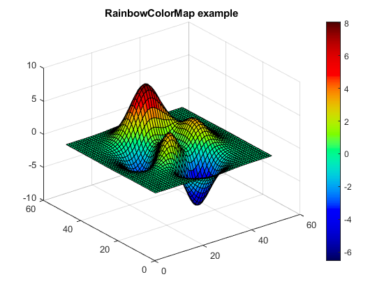

RainbowColorMap
Navigate to: Home | Alphabetic list | Grouped list | Source code: RainbowColorMap.m
A rainbow color map to be used with Matlab's 'colormap' function
Contents
Syntax
rv = RainbowColorMap(nn)
Input Arguments
- nn: scalar positive integer. Number of colors in map, 256 is a good value in many cases.
Output Arguments
- rv: double array, size (nn,3). The color map.
Usage Example
function ExampleRainbowColorMap() rcm = RainbowColorMap(256); figure(); hold on; plot(1:256,rcm(:,1),'r'); plot(1:256,rcm(:,2),'g'); plot(1:256,rcm(:,3),'b'); legend({'Red','Green','Blue'}); title('RainbowColorMap color channels'); figure(); zz = peaks; surf(zz); colormap(rcm); colorbar; title('RainbowColorMap example'); end